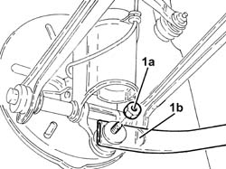
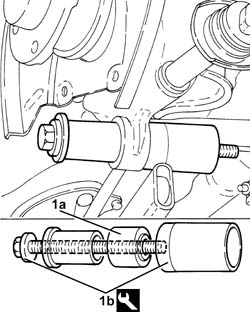
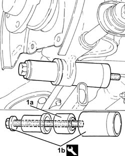
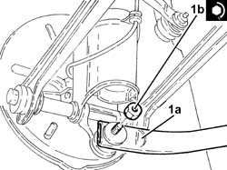

4420D49 BUSHES for rear suspension dampers - R.R.
- Path
- Procedures > 44 SUSPENSION AND WHEELS > 4420 REAR SUSPENSION > 4420D rear suspension axle/crossbeam > 4420D49 BUSHES for rear suspension dampers - R.R.
- Kind
- repair procedure (removal / refitting; the operation number is the code)
- Applies to
- all engines; all production periods
- Interactive page
- https://sloeber94.github.io/elrnDB-a156/en/#/3238214
Applies to: all engines; all production periods
 Removing
Removing
 Refitting
RefittingPosition the vehicle on the ramp.
Proceed with removal 3310B48 rear brake disc - r r .
Undo the bolts and move the rear brake disc guard sideways.
1. Undo the bolts (1a) and disconnect the rear suspension longitudinal tie rod (1b) from the stub axle.

Applies to: all engines; all production periods
1. Remove the bush (1a) using the tool (1b).
 | Name | Country |
|---|---|---|
1b | Puller/ftitting tool | 1.871.002.800 |

Applies to: all engines; all production periods
Refitting
Removing1. Place a new bush (1a) in the housing using the tool (1b).
| Name | Country |
|---|---|---|
1b | Puller/ftitting tool | 1.871.002.800 |

Applies to: all engines; all production periods
1. Connect the rear suspension longitudinal tie rod (1a) to the stub axle and tighten the bolt (1b) to the recommended torque.
 | Fastening | Component | Ø | Value (daNm) |
|---|---|---|---|---|
1b | Bolt | REAR ANCHORAGE ROD | M12 | (Wheel hub stub axle side) 11.7 ÷ 12.9 |

Applies to: all engines; all production periods
Place the rear brake disc guard back in its housing and fix it using the bolts.
Proceed with refitting 3310B48 rear brake disc - r r .
Remove the car from the ramps.